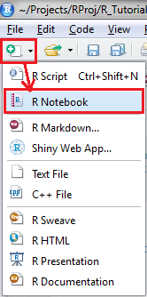
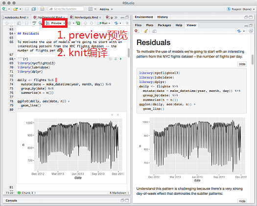
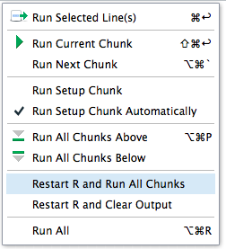
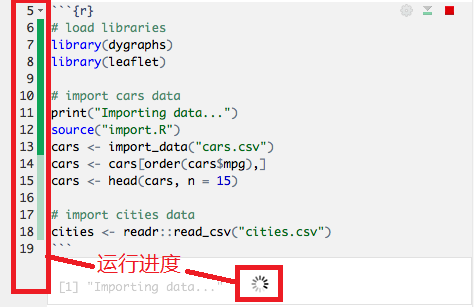
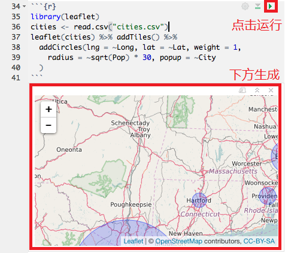
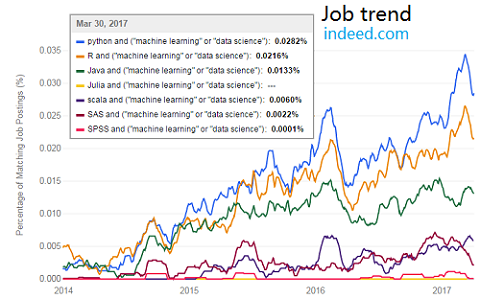
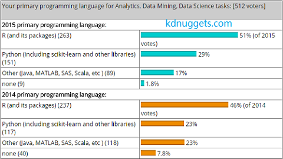

2017-06-22 20:39:31
创建 –> 编辑 –> 设置
  交互运行时，能看到进度条

交互运行完毕后，结果显示在代码块下方
jupyter notebook 
conda或miniconda)到下载页下载对应的Anaconda Installer
bash <路径>.sh命令通过.condarc配置conda(通道、代理等)
C:\Users\<用户>\.condarc~/.condarc/opt/<用户>/anaconda/.condarc
.condarc一般包含内容:
channels: - r - defaults proxy_servers: http: http://<用户名>:<密码>@<代理服务器>:<端口号> https: https://<用户名>:<密码>@<代理服务器>:<端口号>
conda infoconda helpconda listconda search <参数> <包名>conda install <参数> <包名>conda update <参数> <包名>conda remove <参数> <包名>conda install命令自行安装conda install|update|remove <参数> <包名>
-h 打开帮助-f 强制安装-c 'default'以外的下载通道，默认为'anaconda.org'-n 指定所装入的环境-v 明细安装信息conda install -c r r-essential命令在Anaconda安装独立的R环境
install.packages(c('repr', 'IRdisplay', 'evaluate', 'crayon', 'pbdZMQ', 'devtools',
'uuid', 'digest'))
devtools::install_github('IRkernel/IRkernel')
IRkernel::installspec()
Thank you!